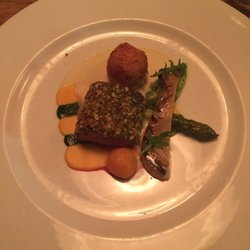

| Home | Things to do | Nightlife | Eating and drinking |
|
|||
JohannesRestaurant Johannes is situated at the the Herengracht, overlooking the beautiful canals.The cuisine of restaurant Johannes style is classic French-international but with a modern twist. Restaurant Johannes has an unique concept. You can choose between 4, 5, 6 or 7 courses of the menu that changes every 2 weeks. T Each course can be accompliced with a wine pairing but the sommelier can also assist you of choosing your own wine from the extensive wine list. |